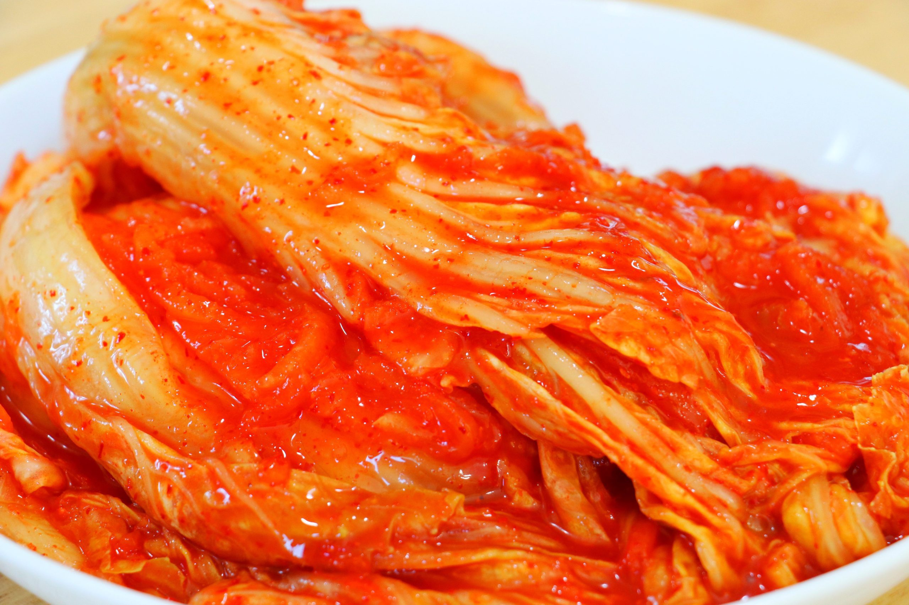

Kimchi

Kimchi is a type of fermented food that originates from Korea. Kimchi’s name varies depending on the main vegetables used. Here, you will find my best napa cabbage kimchi recipe made in pogi kimchi (whole cabbage kimchi) style.
- 4kg (8.8 pounds) napa cabbage (Chinese cabbage), remove thick outer cabbage leaves
- 16 cups (3840 ml) water
- 1.5 cups (285g / 10 ounces) Korean coarse sea salt or natural rock salt (for salt water)
- 1/2 cup (97g / 3.4 ounces) cooking salt, medium sized crystals (for sprinkle)
Steps
- Cut the napa cabbage into quarters and rinse it in running water. Make sure the stem is intact.
- Dissolve the coarse salt in the water (16 cups) in a large bowl. Dip the napa cabbage in the saltwater one at a time and transfer it onto a tray for further salting.
- Put the salted cabbage in a large food grade plastic bag or large bucket (wedge side of the cabbage to be facing up) and pour in the reserved saltwater from step 2. Close the plastic bag. If using a bucket, get something heavy on top of the cabbage to press down (e.g heavy pot with water).
- Once the soaking process is finished, rinse the cabbages in running water, especially the thick white part of the cabbage, to get rid of the salt. Place them in a colander and allow to drain for 1 hour.
- While waiting, prepare the glutinous rice paste. Mix glutinous rice flour with the water (1.5 cups) in a saucepan and boil it over medium heat for 5-8 minutes, until it thickens. Once ready, transfer the rice paste to the medium-size bowl and let it cool. Add Korean chili flakes once it has cooled. Then, combine them well.
- Prepare a large mixing bowl and add radish, fine sea salt, Korean fish sauce, and salted fermented shrimp. Leave it for 10 minutes for the radish to salt down. Add Korean chives, carrots, minced garlic, minced ginger, sugar, blended onion, and the Korean chili flakes mixture from step 5. Mix them well. Now the kimchi seasoning / kimchi paste is made, ready for use.
- Place a quarter of a cabbage on a tray. Spread the seasonings over each leaf. (You only need to season one side of the leaf.) 1 to 2 small fistfuls of seasoning is enough per quarter of cabbage. Repeat this step for the rest of the cabbage. Don’t pull the cabbage leaves off the stem, leave them attached so it holds together better.
- Transfer the kimchi into a kimchi container or an airtight container (and put the lid on). Leave it out at room temperature for 24 hours, then move it to the refrigerator. While you can start eating it once it’s chilled, you may want to wait 3-4 more days for it to develop more flavor.